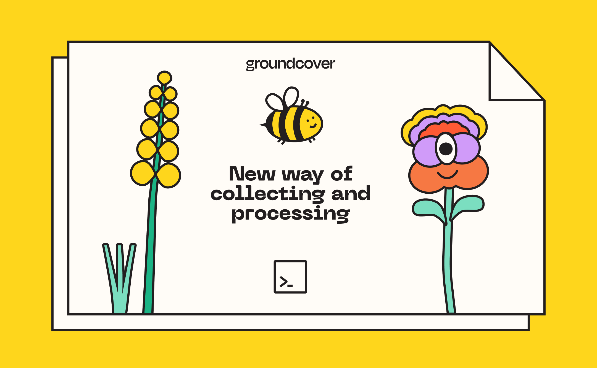
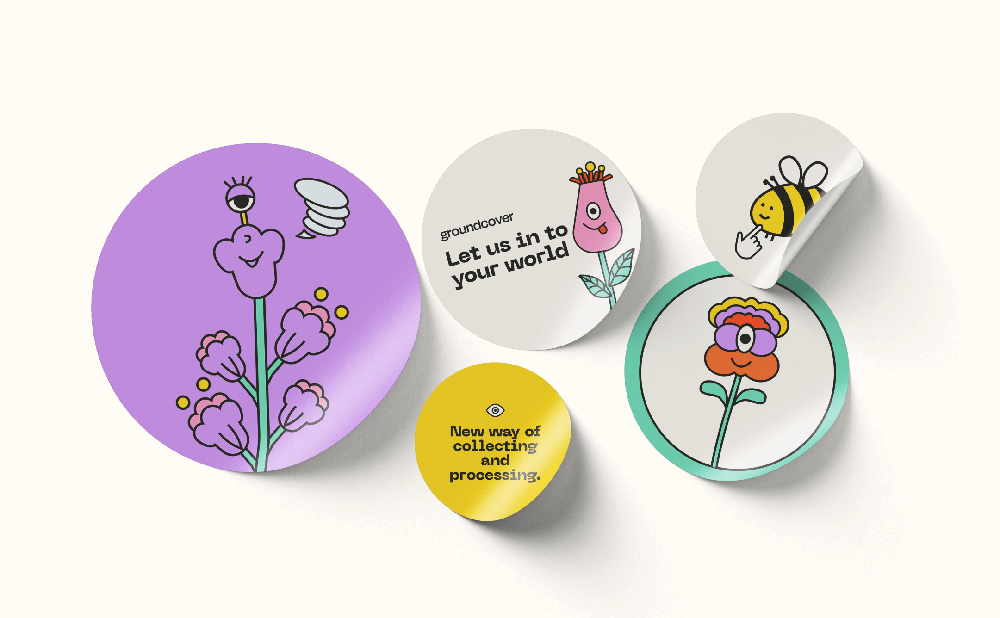
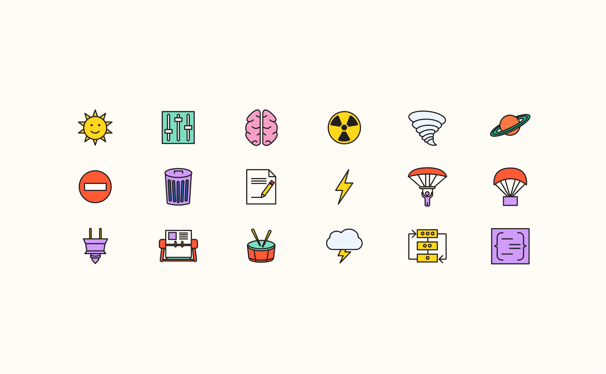
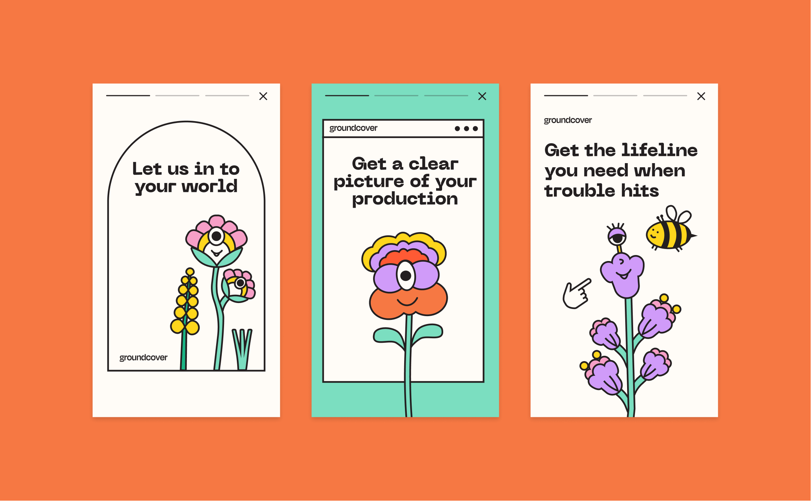
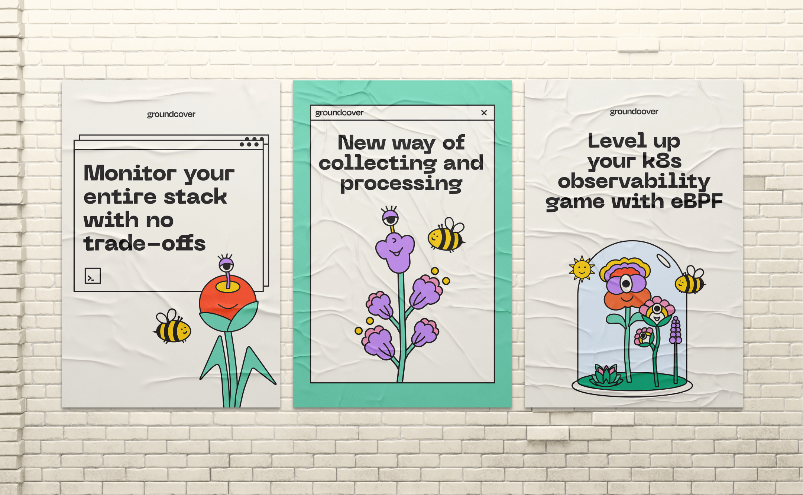
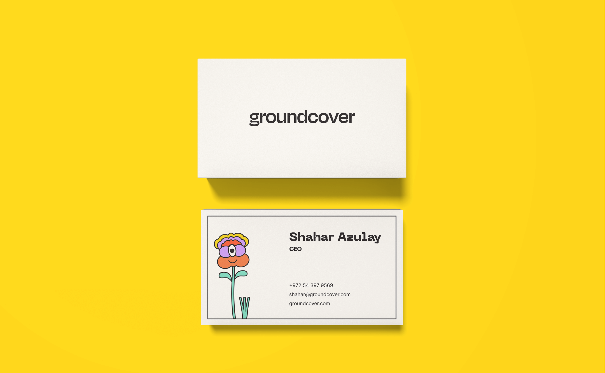
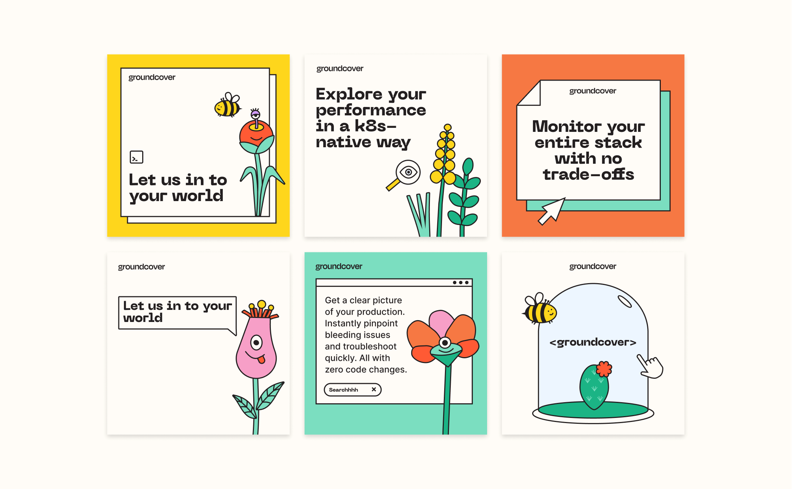
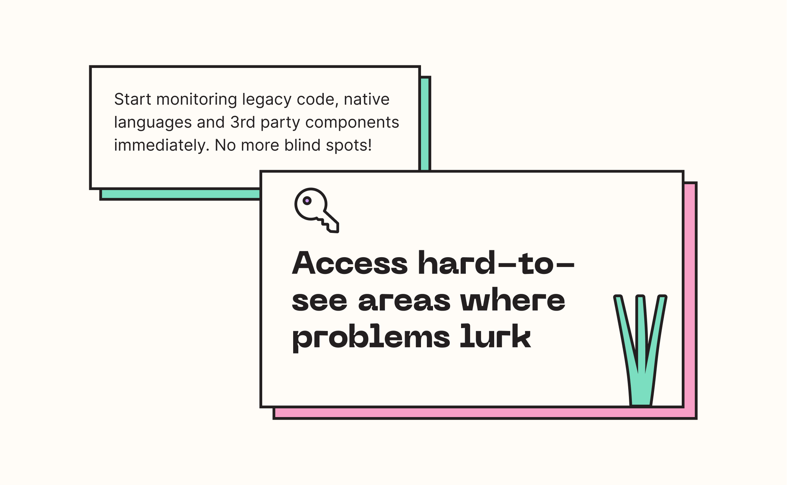

A 10-day Brand sprint for Groundcover
groundcover makes data troubleshooting easy. using a cutting-edge tech called eBPF, they replace old methods
without any code changes. their goal? set the standard in visibility and monitoring for this new eBPF era.
groundcover isn't a random name. it's like tending a garden - nurturing your warehouse, planting seeds, watching
it grow digitally. we pushed this metaphor, creating creatures to 'see' your ground. rebellious, because it’s new.
and since it's a developer tool at the end of the day, we made sure it was creative and colorful, just like the
developers who'll be using it.
Client |
Groundcover
Designer and Illustrator | Kate Holub
Art Director | Eden
Vidal











